See More Article's:
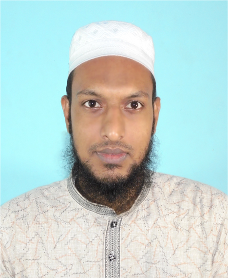 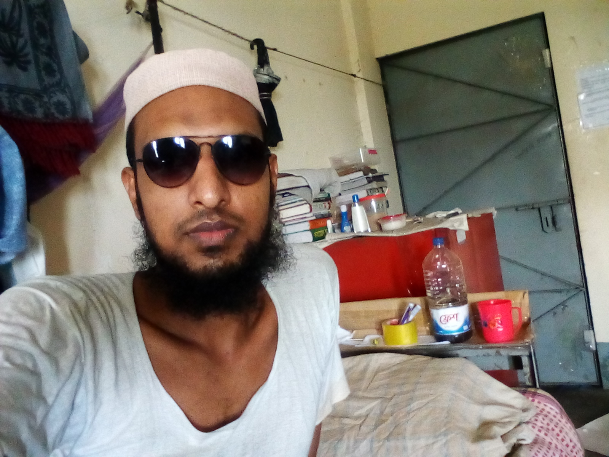 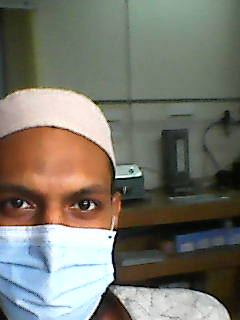 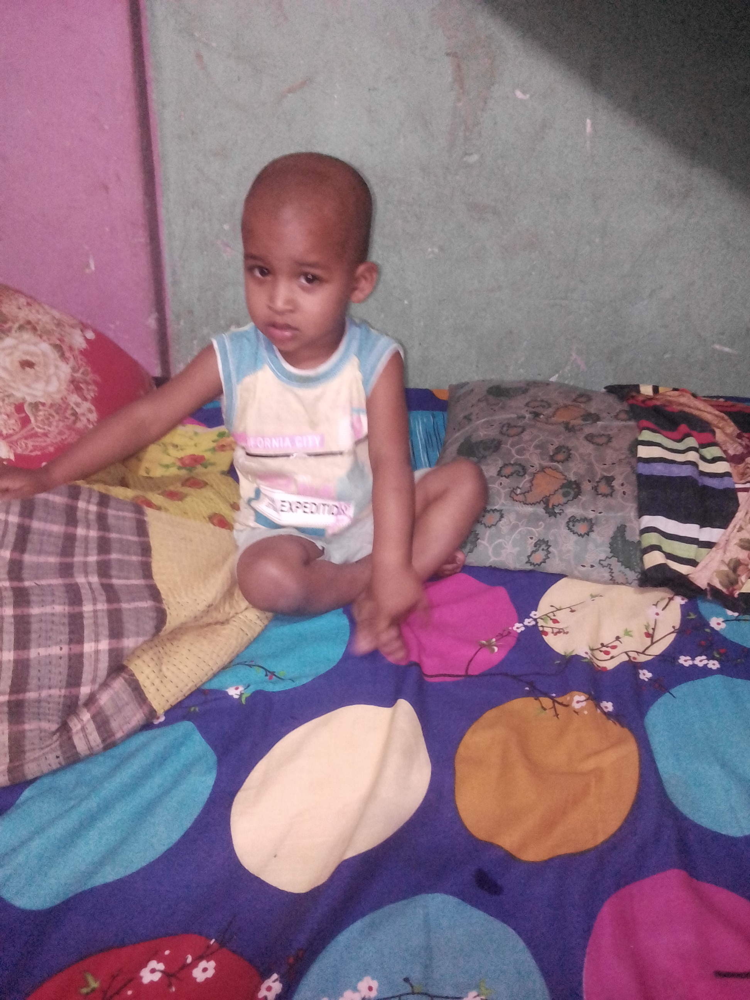
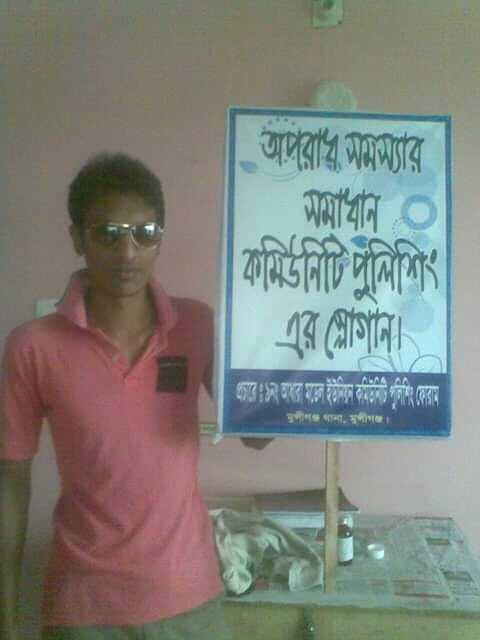
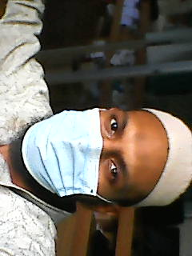
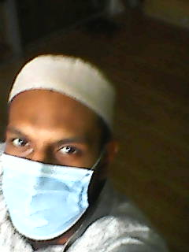
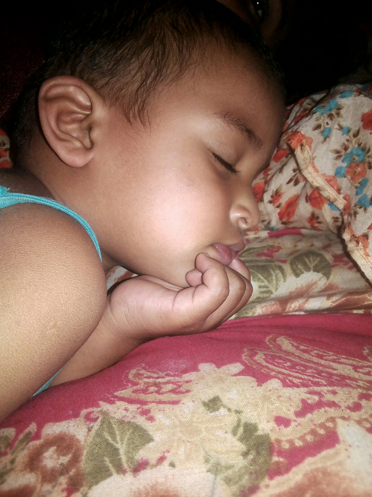
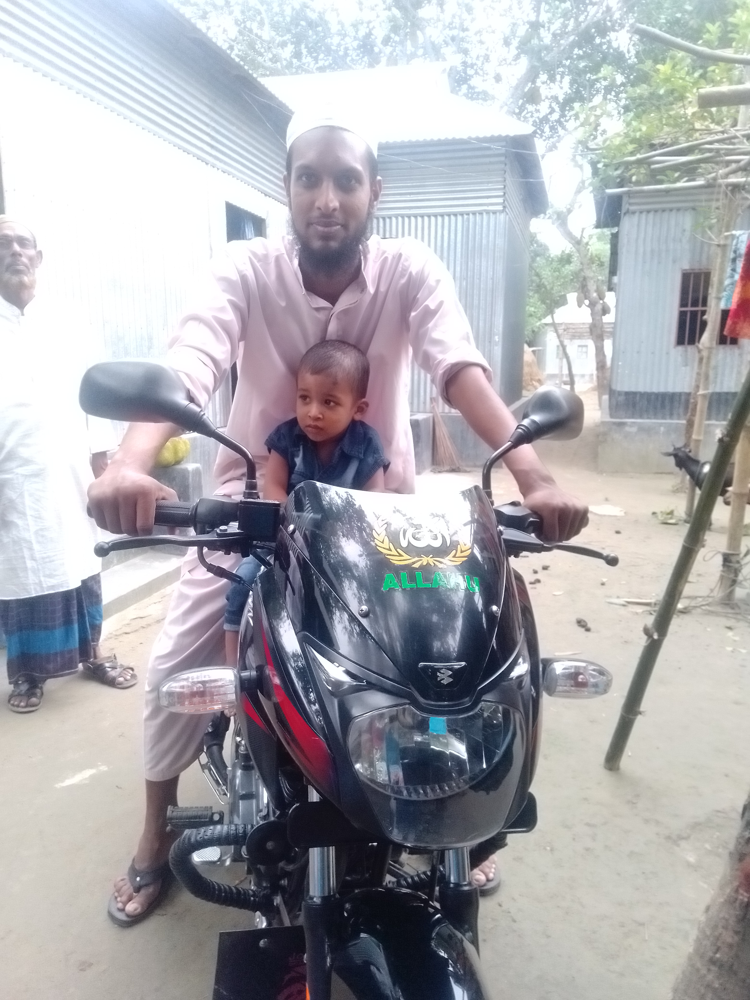
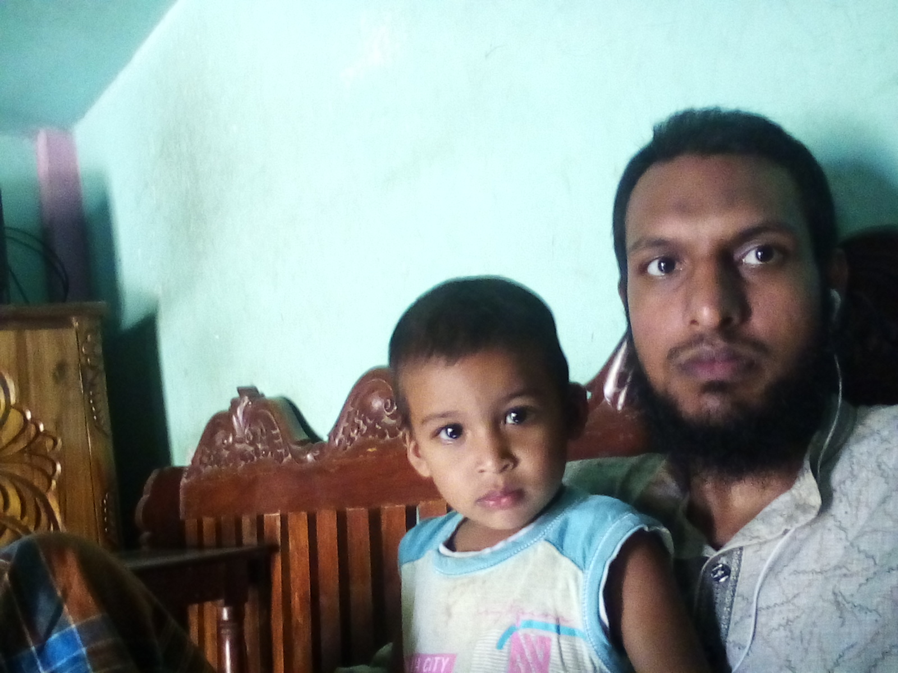
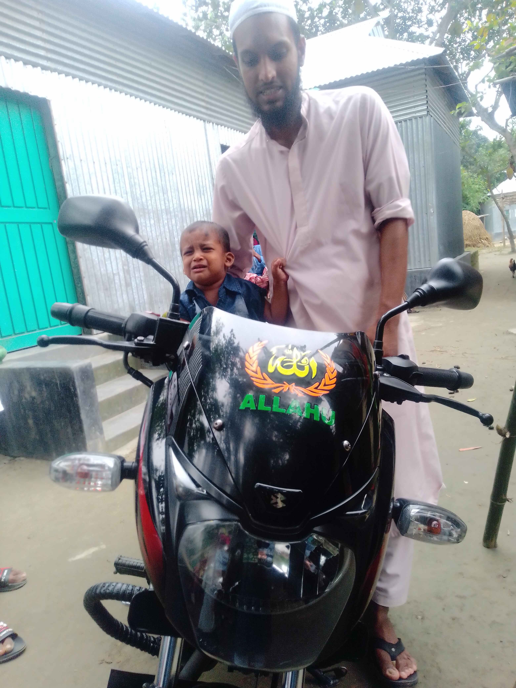
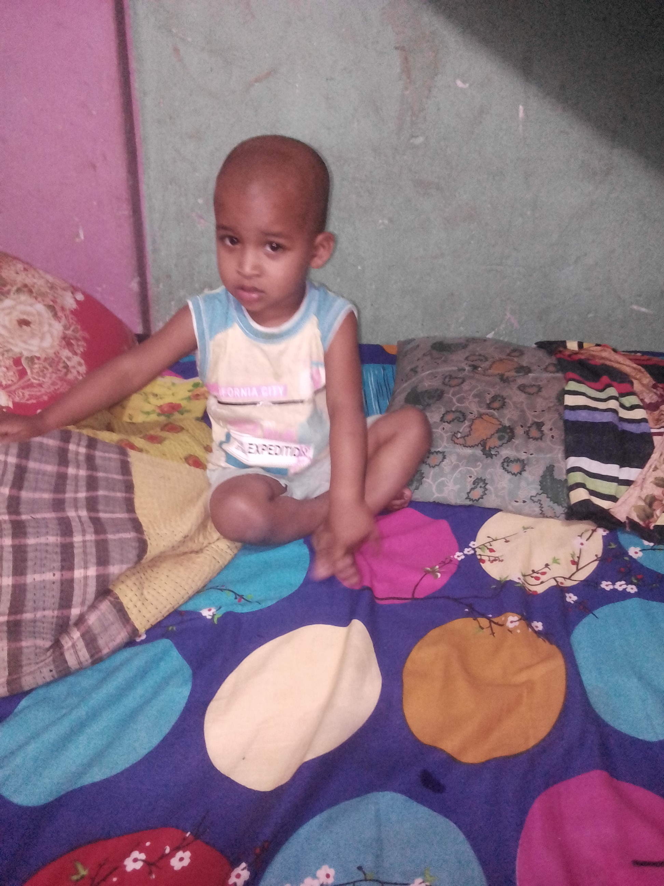
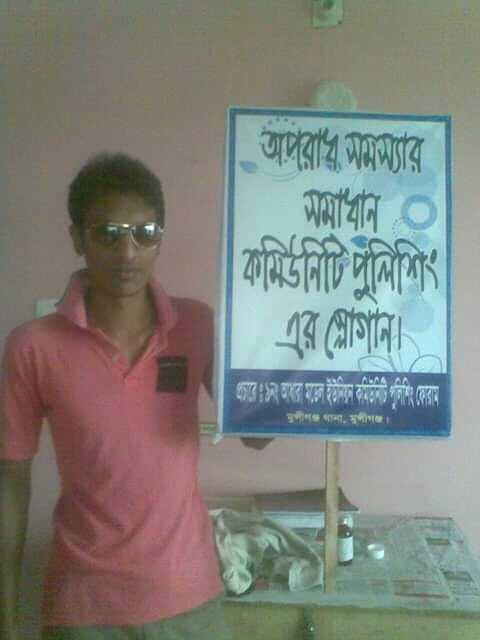
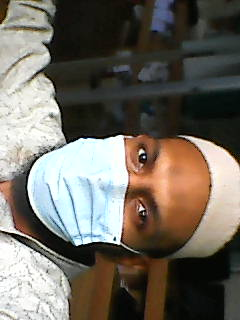
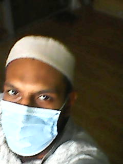
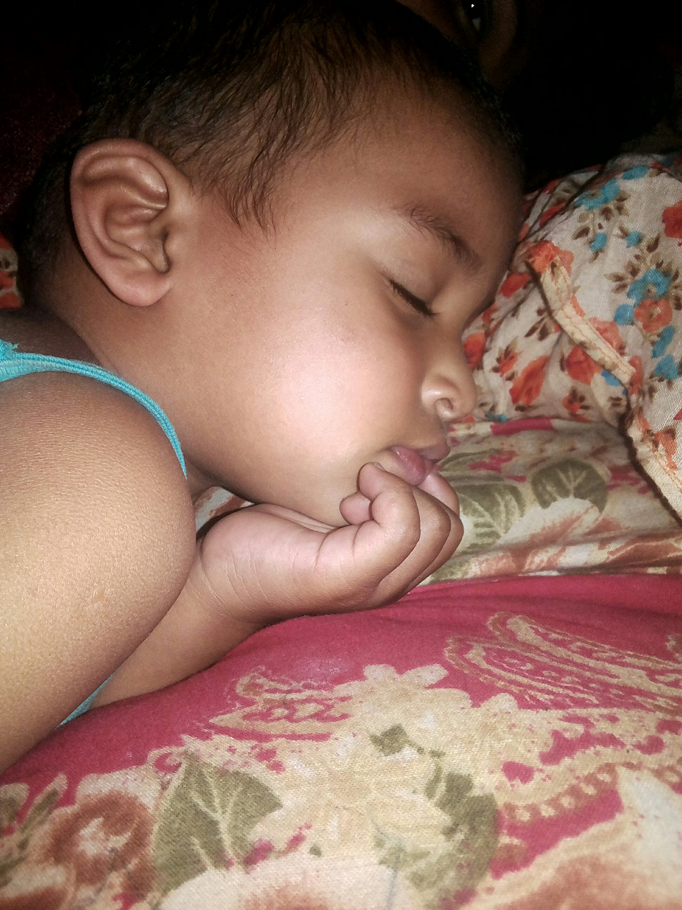
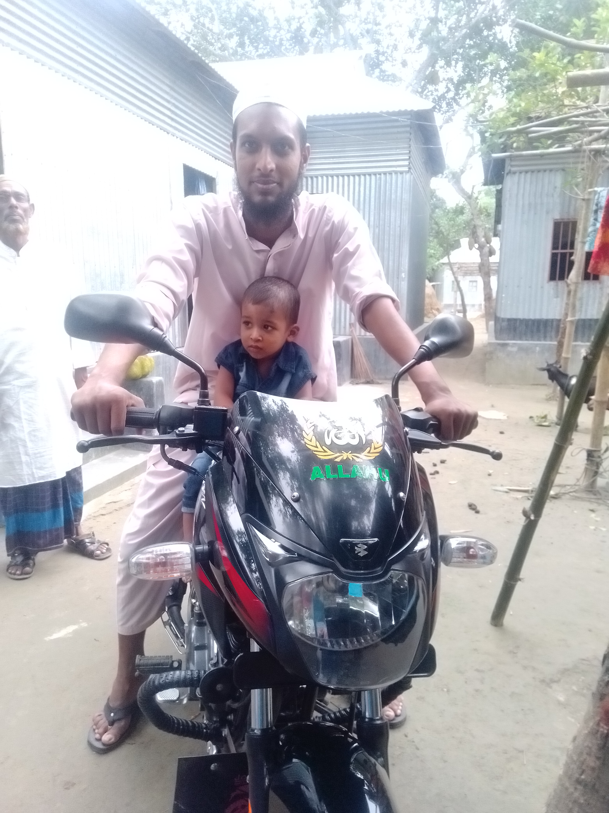
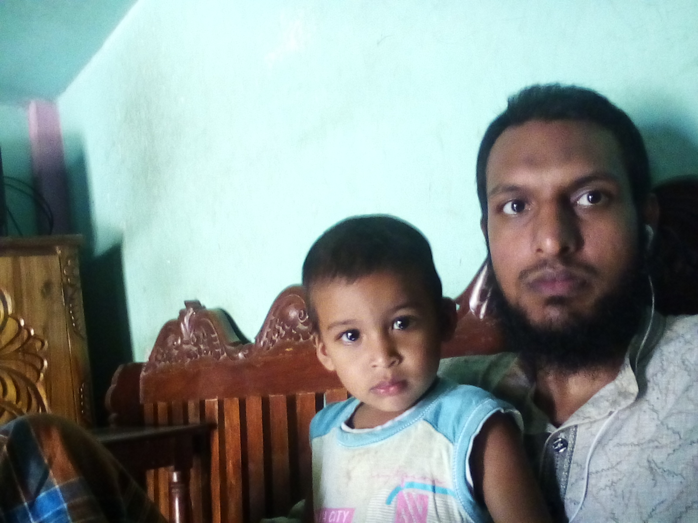
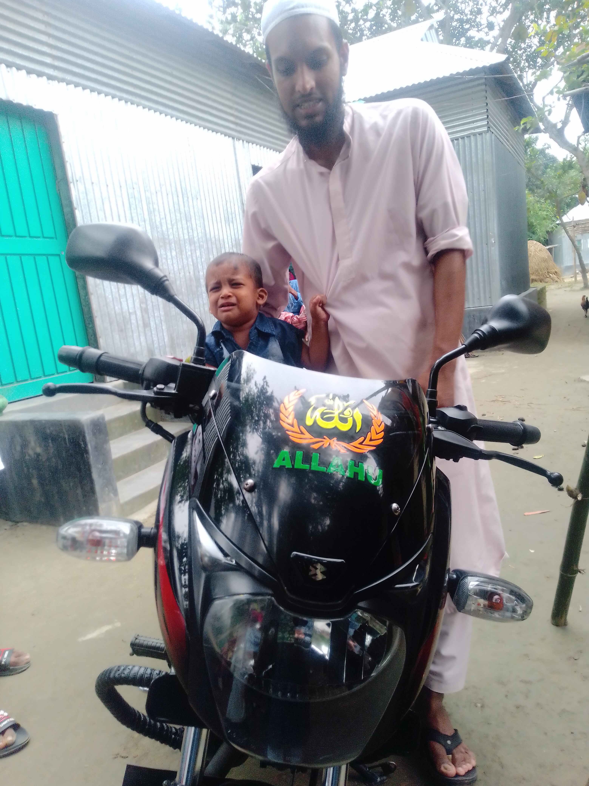
In order to keep fit you have to follow the rule's of health. You cannot keep fit without keeping a balanced diet.Alongwith a balanced diet you ensure sound sleep and proper rest. Avoid mental anxities. Physical exercise is also essential for all to keep fit. Another essential is good food.Avoid any kind of stale food or unhygienic food. Over eaitng causes indigestion.So don't over eat.Take food in time. Give up any kind of bad habit or addiction.In order to keep fit mentally, controlyour emotions and accept the reality. Avoid tension and always take care of health.Never take medicine without consulting a doctor because it is dangerous.Always bear in mind that the best way to keep fit is to follow the rules of health and it does not have any alternative.